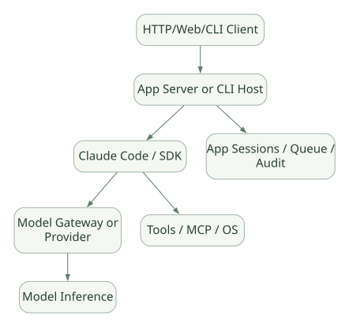
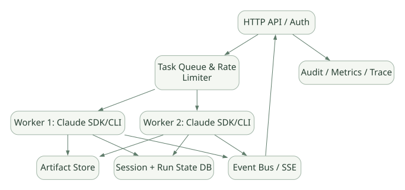

SECOND STUDY / Serving·예약·관측
Serving·예약·관측
이번 단원의 읽는 관점
CLI·SDK 진입과 API·큐·세션·취소·스케줄링·Gateway 경계를 읽습니다.
살펴볼 경계Scheduler는 실행 Trigger이며 복구·권한·정확성을 대신 보장하지 않습니다.
이 페이지의 세부 목차
Part VII. Claude Code CLI·SDK 경계, Serving, 동시 요청, Cron
33. Claude Code는 모델 서버가 아니라 Agent Runtime이다#
일반적인 LLM Serving(vLLM, SGLang)은 Token 생성을 제공하는 Model Serving Layer다. Claude Code는 모델에서 나온 Tool 요청을 실행하고, Context를 조립하며, Session을 관리하는 Agent Harness Layer다. 양자는 대체 관계가 아니라 위아래 계층으로 결합될 수 있다. 다만 Claude Code가 임의의 OpenAI-compatible 로컬 모델 API에 완전하게 대응한다고 자동으로 가정하면 안 된다. 현재 문서화된 Provider·Gateway·특수 필드 및 Tool 호환성이 중요하다. DOC
가로로 이동해서 읽을 수 있습니다. 도식 크게 보기 ↗

원문의 학습용 도식입니다. 연결 방향·분기 조건·점선·쌍방향 연결을 보존해 세로로 배치했습니다. 실제 구현·의사코드·해석의 구분은 본문을 함께 읽으세요.
도식 원문 보기 (Mermaid)
flowchart LR
USER[HTTP/Web/CLI Client] --> H[App Server or CLI Host]
H --> CC[Claude Code / SDK]
CC --> G[Model Gateway or Provider]
G --> M[Model Inference]
CC --> T[Tools / MCP / OS]
H --> S[App Sessions / Queue / Audit]가장 중요한 질문: 누가 run_id를 만들고 요청을 취소하는가? 누가 Session 파일의 소유권을 갖는가? Agent가 죽은 동안에도 외부 Tool 실행이 계속되면 누가 감시하는가? 위 세 질문은 단순 claude -p 사용만으로 해결되지 않는다.
34. CLI 실행 모드 비교#
공식 CLI Reference는 다음 사용 패턴을 제시한다. DOC
claude # 대화형
claude -p "Summarize repository" # 비대화형 실행 후 종료
claude -c # 최근 대화 이어가기
claude -r "<session-id>" # 특정 세션 재개| 실행 표면 | 사용자 상호작용 | Session 주체 | 언제 적합한가 |
|---|---|---|---|
| Interactive CLI | Terminal에서 승인·중단 | 로컬 CLI | 개인 개발·학습 |
claude -p |
스크립트/CI에서 결과 소비 | CLI 실행·호스트 | 제한된 단발 작업 |
| Claude Agent SDK Python/TS | 프로그램이 메시지·승인·Tool Callback 제어 | 앱+SDK+CLI | 사용자 서비스·자동화 |
| Remote Control | 다른 장치에서 로컬 세션 연결 | 해당 세션 호스트 | 원격 접속·모니터링 |
| Cloud routine/scheduled task | 별도 클라우드 작업 | 클라우드 실행 시스템 | 정해진 조건·주기에 반복 |
비대화형 = 완전한 서버 운영 기능은 아니다. Agent 실행에 자체 API가 없으면 App Server가 CLI 또는 SDK를 호출하고 Life Cycle 관리, 동시 요청, 작업 큐, 인증, 이벤트 전파, 장애 복구를 별도로 설계해야 한다.
35. 공개 Python SDK에서 검증 가능한 진짜 호출 경로#
Claude Code 핵심 실행기의 내부 루프와는 달리, Claude Agent SDK Python 공개 코드에서는 query() 진입, Subprocess Transport, 제어 프로토콜, 메시지 파싱 등 런타임 바깥 경계를 검증할 수 있다. 여기서는 이전 1차 Claude Agent SDK 문서에 연결된 Python v0.2.174 공개 소스를 독립적으로 고정해 살펴본다. 이 버전은 Claude Code 본체 v2.1.314와 일치하는 릴리스 넘버가 아니므로 두 제품의 버전 호환성은 별도 판단해야 한다. SRC[R26][R27][R28]
35.1 공개 소스 경로#
src/claude_agent_sdk/query.py
-> query(...)
-> InternalClient.process_query(...)
-> SubprocessCLITransport.connect(...)
-> bundled Claude Code CLI subprocess
-> Query control protocol / message stream
-> parse_message(...)
-> Python SDK message objects실제 코드에서 확인할 수 있는 지점
src/claude_agent_sdk/query.py: 편의query()API 진입,InternalClient에 위임.src/claude_agent_sdk/_internal/client.py: 요청 처리, Transport 구성 및 리소스 정리.src/claude_agent_sdk/_internal/transport/subprocess_cli.py: CLI 시작 인자·환경·표준 입출력 통신.src/claude_agent_sdk/_internal/query.py: CLI↔SDK Control Message, Permission/Hook Callback.src/claude_agent_sdk/_internal/message_parser.py: 원시 CLI 메시지를 SDK 객체로 변환.
경계선: 이 흐름을 추적한다고 해서 CLI 안의 Agent Loop가 Python으로 구현되어 있다는 결론은 나오지 않는다. SDK는 CLI 프로세스를 실행·제어하고 응답을 관찰하는 인터페이스다. SRC[R27][R28]
35.2 호출 경로의 의미와 기술적 장단점#
| 계층 | 얻는 능력 | 늘어나는 비용/제약 |
|---|---|---|
| Python SDK | 앱 내 Integration과 Type 구성 | SDK/CLI 버전 조합 관리 |
| Transport | CLI lifecycle, stdout/stream 관리 | Process 시작 및 IPC 비용 |
| CLI Runtime | 내장 Tool, Context, Session, Permission | 내부 구현 수정·코드 디버깅 제한 |
| Model API | 모델 추론 | Provider·비용·지연·Rate Limit |
| Host Server | 인증, 요청·작업 관리 | 직접 설계해야 하는 운영 영역 |
이 경계는 연구 목적에 따라 장단점이 뚜렷하다. 코드 분석의 자유가 가장 중요하면 공개 SDK/Framework가 유리할 수 있고, 완성도 있는 Agent 기능을 빠르게 재사용하려면 CLI 기반 Harness가 유리할 수 있다.
36. 일반적인 Agent Serving 시스템에서 추가할 컴포넌트#
다음은 Claude Code 내장 컴포넌트라고 주장하지 않는, 서버 개발을 위한 권장 아키텍처다. [INF]
가로로 이동해서 읽을 수 있습니다. 도식 크게 보기 ↗

원문의 학습용 도식입니다. 연결 방향·분기 조건·점선·쌍방향 연결을 보존해 세로로 배치했습니다. 실제 구현·의사코드·해석의 구분은 본문을 함께 읽으세요.
도식 원문 보기 (Mermaid)
flowchart TB
API[HTTP API / Auth] --> Q[Task Queue & Rate Limiter]
Q --> W1[Worker 1: Claude SDK/CLI]
Q --> W2[Worker 2: Claude SDK/CLI]
W1 --> SS[Session + Run State DB]
W2 --> SS
W1 --> ART[Artifact Store]
W2 --> ART
W1 --> EV[Event Bus / SSE]
W2 --> EV
EV --> API
API --> AUD[Audit / Metrics / Trace]필요한 계약은 다음과 같다.
| 컴포넌트 | 책임 | 미구현 시 문제 |
|---|---|---|
| Authentication/Authorization | 사용자별 실행·데이터 접근 분리 | 다른 사용자의 파일·세션 공유 |
| Queue / Worker Pool | 요청 동시성·작업 백프레셔 | 프로세스 폭증·Rate Limit |
| Session Store | 대화와 Run 상태 키 관리 | 프로세스 재시작 후 이어가기 불안정 |
| Cancellation | 외부 프로세스·작업 중단 | 요청 취소 후 작업 지속 |
| Event Stream | 진행 상태·Tool 결과·완료 전달 | 긴 작업의 타임아웃·불투명한 UX |
| Idempotency | 외부 부작용 재실행 방지 | 중복 커밋·중복 호출 |
| Audit | 누가 어떤 Tool을 승인·실행했는지 | 사고 조사 불가능 |
| Retry Policy | API/Tool/Host 오류 별도 분류 | Side effect 중복, 무한 재시도 |
| Secret Management | Credential 격리 | 로그·프롬프트로 유출 |
36.1 API 응답 동기·스트리밍·비동기#
동기: 요청 연결을 유지하고 최종 답변을 반환. 간단하지만 긴 Tool Task에서 Timeout 위험.
스트리밍: 모델/Tool 이벤트를 SSE/WebSocket 등으로 전달. Tool이 종료됐다는 의미와 Run이 끝났다는 의미를 별도로 표현해야 함.
비동기: 즉시 run_id를 반환하고 Worker가 계속 진행. Job Store·큐·재개·상태 쿼리가 필요.
실패 사례: 사용자의 HTTP 연결이 끊겨도 백그라운드 Shell이 계속 실행되었을 수 있다. 클라이언트 Cancel과 Agent Cancel, OS Process Kill, 외부 API Cancel은 각각 다르다.
37. Session 소유권과 동시 요청#
하나의 Session에 두 사용자의 Turn을 동시에 보내면 메시지 순서, Tool 결과 바인딩, Context 압축 타이밍이 충돌할 수 있다. Agent Serving 설계에서는 사용자·프로젝트·세션별 단일 Writer 또는 버전·순서 규약을 결정해야 한다. [INF]
Session S version 10
Request A reads version 10
Request B reads version 10
A appends tool result -> version 11
B appends stale result -> overwrite or mismatched order?이를 피하기 위한 패턴은 per-session queue, optimistic version check, immutable append-only events, 충돌 시 409 또는 재대기다. 이것은 Claude Code 기본 내부 저장소의 구현 보장이 아니라 일반적인 서비스 설계 기법이다.
38. Remote Control, Cloud Runner, Headless의 차이#
Remote Control은 로컬에서 실행되는 Session에 다른 장치로 접속해 사용하는 기능이다. 작업이 어디서 실행되는지는 별도로 확인해야 한다. Headless는 입력/출력에 Terminal UI가 없는 실행 방식이다. Cloud Routine은 완전히 다른 작업 호스팅·시간 정책을 가질 수 있다. DOC[R31]
발표 포인트: "원격으로 보인다"는 것은 "서버에서 완전 분리된 무중단 Job으로 실행된다"는 뜻이 아니다. 세션을 실제로 소유하고 있는 프로세스·호스트·조직 계정과 별도 API 실행 여부를 물어야 한다.